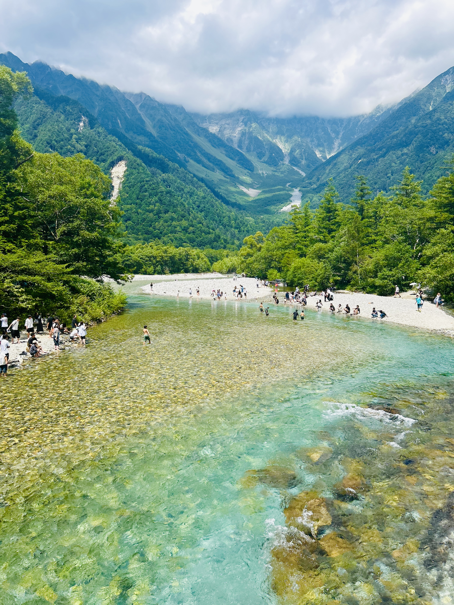

Seasons of Japan 🌸🍁❄️🌞

SPRING 🌸

SUMMER 🎐

AUTUMN 🍁

Join Us on Our Journey
Experience Japan through its beautiful four seasons cherry blossoms, festivals, autumn leaves, and winter snow. We are a Sri Lankan couple living in Japan, and we love exploring new places together. Here are some of the amazing spots we've visited throughout the seasons.

Kamikochi, nestled in the Japanese Alps, is a breathtaking summer retreat. Surrounded by lush green mountains, crystal-clear rivers, and vibrant wildflowers, it offers peaceful hiking trails, stunning views, and a chance to connect with nature. Summer in Kamikochi is perfect for escaping the city, enjoying cool mountain air, and experiencing the serene beauty of Japan's alpine landscapes.